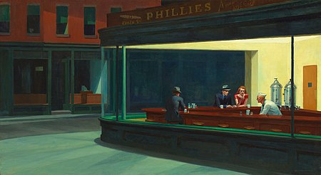

Nighthawks Hopperby-Edward hopper
Nighthawks is a 1942 oil-on-canvas painting by the American artist Edward Hopper that portrays four people in a downtown diner late at night as viewed through the diner's large glass window. The light coming from the diner illuminates a darkened and deserted urban streetscape.It has been described as Hopper's best-known work and is one of the most recognizable paintings in American art.

Cicada by Qi-Baishiz
Qi Baishi was a Chinese painter, noted for the whimsical, often playful style of his works.Many of his works depict mice, shrimp or birdsUsing heavy ink, bright colors, and vigorous strokes, he created works of a fresh and lively manner that expressed his love of nature and life.
The Weeping Woman
by-Picaso
The Weeping Woman is a series of oil on canvas paintings by Pablo Picasso, the last of which was created in late 1937. The paintings depict Dora Maar, Picasso's mistress and muse. The Weeping Woman paintings were produced by Picasso in response to the bombing of Guernica in the Spanish Civil War and are closely associated with the iconography in his painting Guernica. Picasso was intrigued with the subject of the weeping woman, and revisited the theme numerous times that year.